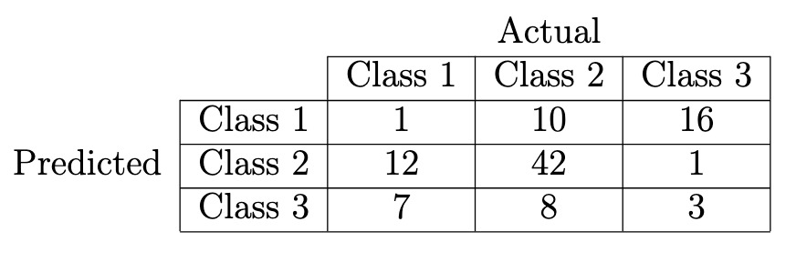

Exam 2020
Question 1: Linear regression
1. Let \(\mathbf{X}\) be a centered \(n \times d\) matrix whose rows are the input vectors \(\mathbf{x}_i \in \mathbb{R}^d\)
of a training set \(\mathcal{D} = \{ (\mathbf{x}_i, y_i) | i=1, ...,n \} \subset \mathbb{R}^d \times \mathbb{R} \), and let \( \mathbf{y} \in \mathbb{R}^n = (y_1,..., y_n) \)
-
If a closed form linear regression solution \( \overset{\wedge}{f} (\mathbf{x}) = \mathbf{x}^T (\mathbf{(X^TX)^{-1}X^Ty} ) \) exists then \( \overset{\wedge}{f}(\mathbf{x}) \) is the projection of \(x\) onto a hyperplane that intersects the origin
Answer: True since this is the least squares solution of the regression problem from homework 1 which consists of finding a projection plane that minimizes the residual sum of squares error. There is no bias term and thus the plane passes by the origin.
-
Linear ridge regression does not have a closed form solution if \(n < d\)
Answer: False. Linear ridge regression either has no solution or a unique solution from the expression for the parameters \( \overset{\wedge}{\beta} = (\mathbf{X^TX} + \lambda \mathbb{I})^{-1} \mathbf{X}^T \mathbf{y} \) so the unique solution depends on the invertibility of \( \mathbf{X^TX} + \lambda \mathbb{I} \). See the StatQuest video on ridge for more info. Note that in the case of normal linear regression, when \(
n < d\) then \( rank(\mathbf{X}) = \min(n, d) = n\) and so \( rank(X^TX) \leq \min(rank(X), rank(X^T))= rank(X) \) since \(rank(X^T) = rank(X)\) therefore since \(rank(X^TX) \neq d\) we have that \(X^TX\) is not invertible.
2. Consider now the regularized least squares optimization problem given by \[ \overset{\wedge}{\beta}=\text{arg min}_{\beta} \left\{ \sum_{i=1}^{n}(y_i - \sum_{j=1}^{d}x_{i,j}\beta_j )^2 + \lambda \sum_{j=1}^{d}|\beta_j|^q \right\} \]
-
This optimization problem is convex for every \(q>0\)
Answer: False. Let \(q < 1\); for example, \(q= \frac{1}{2}\) then clearly the function \(\sum_{j=1}^{d}\sqrt{|\beta_j|} \) is not convex since the square root function for single variable is not convex and for multivariable we fix all variables except one variable to see that the curved traced
by the intersection of the (hyper)plane with the function is not convex. The more we increase \(\lambda\) the clearer will be the non-convexity of the function. Constrain all the variables to the (hyper)sphere \( \sum_i \beta_i^2 < 1 \) then clearly \( \sum_{i=1}^{n}(y_i - \sum_{j=1}^{d}x_{i,j}\beta_j )^2 \) is bounded in this (hyper)spherical region. Even if we were to
assume that in this region the function (given by the sum of the regularizer and residual squares) is convex then we can increase \( \lambda\) enough to make it non-convex within this region.
-
This optimization problem is equivalent to minimizing the unregularized least squares error \( \sum_{i=1}^n (y_i - \sum_{j=1}^d x_{i, j}\beta_j )^2 \) subject to the constraint \( \sum_{j=1}^d |\beta_j|^2 \leq \mu \) for an appropriate value of the paramter \(\mu\)
Answer: True. Lecture 8 on Convex Optimization by Stephen Boyd on YouTube goes into detail as to how the dual of this constrained optimization problem, with \(\mu = 0 \), is equivalent to solving the unconstrained problem.
Question 2: LASSO regression as MAP regression
Consider a data set \(\mathcal{D} = \{(\mathbf{x}_i, y_i) | i=1,...n \} \subset \mathbb{R}^d \times \mathbb{R}\). Assume that the distribution from which \(\mathcal{D}\) is sampled has the property that for every \(\mathbf{x} \in \mathbb{R}^d\), the conditional distribution of the target is Gaussian, i.e.
\[ Y | (X = \mathbf{x}, \beta ) \sim \mathcal{N}(\mathbf{x}^T \beta, \sigma^2) \]
for some known fixed \(\sigma > 0\). Here \(Y\) and \(X\) denote the random variables of which the \(\mathbf{x}_i, y_i\) are realizations. Recall that performing LASSO regression means solving the optimization problem
\[\overset{\wedge}{\beta} = \text{arg min}_{\beta} \left\{ \sum_{i=1}^n(y_i - \beta^T \mathbf{x_i})^2 +\lambda \sum_{j=1}^d|\beta_j| \right\} \]
In this problem, the goal is to show that LASSO regression is equivalent to finding the maximum a posteriori (MAP) estimate in the Bayesian setting in which we assume that the weights \(\beta_j\)have i.i.d Laplacian prior distributions:
\[ p(\beta_j) = \frac{1}{2b} \exp{ (-\frac{|\beta_j|}{b}) } \text{ for all } j \in \{1, .., d\}\]
Hint: for simplicity, you may assume that the data set \(\mathcal{D}\) is centered in the following
1. Write down the natural logarithm of the un-normalized posterior distribution of \(\beta\). Do not stop at a symbolic formulation, but actually plug in the explicit probability density functions for the data points. "Un-normalized" means you do not have to worry about the evidence but only compute a term that is proportional to the posterior.
Answer: from Bishop page 30 (Bayes' rule), we have that the posterior is proportional to the product of the likelihood and the prior. Therefore, we get that \[
\log{p(\beta| \mathcal{D}) } \approx \log( p(\mathbf{\beta})p(\mathcal{D}| \beta) ) = \log \left( \prod_{j=1}^d p(\beta_j) \prod_{n=1}^N \mathcal{N}(\mathbf{x_n}^T \beta,\sigma^2 ) \right)
\]
\[ =\sum_{j=1}^d \log p(\beta_j) + \sum_{n=1}^N \log \mathcal{N}(\mathbf{x_n}^T\beta, \sigma^2) = -\frac{1}{2} \sum_{n=1}^N (y_n - \mathbf{x_n}^T\beta)^2 - \frac{1}{b}\sum_{j=1}^d |\beta_j| + const\]
2. Show that maximization with respect to \(\beta \) of the term we derived in a) for a given value of \(b\) is equivalent to minimization of the LASSO objective in equation (1) for a value \( \lambda \equiv \lambda(b) \). Derive the formula describing how \(\lambda(b)\) depends on \(b\).
Answer: Maximizing the negative of a function is equivalent to minimizing the function. Therefore, we see that \(\lambda = -\frac{1}{b}\).
Question 3: Bootstrapping
Recall that the naïve Bootstrapping estimate of the error of a classifier is defined as \[ \widehat{Err}_{boot} = \frac{1}{B}\frac{1}{N} \sum_{b=1}^B \sum_{i=1}^N L(y_i, \overset{\wedge *b}{c}(x_i)) \]
where \(B\) is the number of training sets (each of the same size \(N\) as the original data set), and \( \overset{\wedge *b}{c}(x_i) \) is the value at \(x_i\) prediced by the model fitted to the \(b\)th bootstrap set.
Here \(L\) is the 0/1 Loss, i.e. \(L(y, c(x)) = 1_{c(x)\neq y}\).
Consider now a 1-nearest neighbor classifier applied to a two-class classification problem with the same number of observations in each class, in which the features and class labels are independent.
1. Compute the true error rate of the 1-nearest neighbor classifier.
Answer: Since the label is independent of the features the Bayes error rate is 50% (coin flip). By definition, the Bayes classifier minimizes the probability of misclassification and thus any other classifier will achieve 50% asymptotic error. It cannot achieve a smaller error probability than 50% since it is bound below by Bayes classifier and also it cannot
attain a higher error probability than 50% since simply computing its negation will give us an error probability less than 50%.
2. Give an expression in terms of \(N\) for the error estimated by \(\widehat{Err}_{boot}\) as \( N \rightarrow \infty \).
Hint: for a data point \(x_i\), compute the probability that \(x_i\) is contained in a given bootstrap data set.
Answer: The probability that \(x_i\) is not sampled in a given bootstrap is \(\left(\frac{N-1}{N}\right)^N = \left( 1 - \frac{1}{N} \right)^N \) which as \(N \rightarrow \infty\) tends to \(\frac{1}{e} \approx \frac{1}{3}\). The probability it is not contained in any of the bootstrap sets is thus
\(\left( \frac{1}{3} \right)^B \). The probability of misclassification is thus \(p(c(x_i) \neq y_i) = p(x_i \text{ not picked })p(\text{nearest neighbor is different}) = \left( \frac{1}{3} \right)^B \frac{1}{2} \) which is clearly less than 0.5 mentioned earlier.
2. Give a reason why \(\widehat{Err}_{boot} \) does not provide a good estimate for the true prediction error.
Answer: since the error rate is less than the Bayes classifier, we arrive at a contradiction. The "error" was computed to be this low because we introduced a correlation between test and train data as we let \(N\) approach infinity.
Question 4: Bayesian Modeling
Consider a Bayesian model with data \(y\) and parameters \(\beta\). Using the terms \( p(y), p(\beta), p(y | \beta), \) and \( p(\beta | y)\), ...
1. Write the terms for the likelihood, prior, posterior, and evidence
Answer: Respectively \( p(y | \beta), p(\beta), p(\beta | y), p(y) \)
2. write the expression for the evidence in terms of the likelihood and prior
Answer: \( p(y) = \sum_{\beta} p(y| \beta )p(\beta) \)
3. write the expression for the posterior in terms of the likelihood, prior, and evidence
Answer: \( p(\beta | y) = \displaystyle\frac{p(y | \beta)p(\beta)}{p(y)} \)
4. Write the expression for \( p (y^{*}|y) \) needed for predicting the values of unseen data \(y^{*}\) given the observed data \(y\)
Answer: \( p (y^{*}|y) = \displaystyle\sum_{\beta} \underbrace{p(y^* | \beta, y)}_{p(y^* | \beta \text{ fitted on } y)} p(\beta | y) =\frac{1}{p(y)} \displaystyle\sum_{\beta} p(y^* | \beta, y) p(y | \beta)p(\beta) \)
Question 5: MAP and MLE
The Poisson distribution is a commonly used distribution for modelling count data. Its density is given by
\[ \text{Poisson}(x | \lambda) = \frac{\lambda^x e^{-\lambda}}{x!} \]
where \( x \in \mathbf{N}_0 \) and \( \lambda \in \mathbf{R}_{+}\). Assume \(x_1, ..., x_n\) are i.i.d samples from a Poisson distribution with parameter \(\lambda\).
1. Write the log likelihood of \(x_1, ..., x_n\)
Answer: \(P(x_1, ..., x_n|\lambda) = \displaystyle\prod_{i=1}^n p(x_i | \lambda) \) (by independence) = \( \displaystyle\frac{e^{-n\lambda} \lambda^{x_1+...+x_n}}{x_1 ! \times ...\times x_n!} \) taking the log gives
\( -n\lambda + (\sum_i x_i)\log \lambda - \sum_i \log x_i! \)
2. Compute the maximum likelihood estimate of \( \lambda \)
Answer: Taking gradient with respect to \(\lambda \) and setting to zero gives \(-n + \frac{\sum_i x_i}{\lambda} = 0\) we have \( \lambda = \frac{\sum_i x_i}{n}\). We know for fact this \(\lambda\) maximizes since the objective function tends to \(-\infty\) for \(\lambda \rightarrow 0\) and \(\lambda \rightarrow \infty\)
Question 6: Multiclass classification
Suppose that you are given a classifier with the following confusion matrix

1. What is the accuracy of this classifier? Please write your answer using two decimal places, e.g. 0.23.
Answer: \( \frac{1+42+3}{1+10+16+12+42+1+7+8+3} = 0.46 \)
2. What is the balanced accuracy of this classifier? Balanced accuracy is defined as the average of recall obtained on each class, and recall for a given class is \(TP/(TP+FN)\)
with \(TP=\) true positives and \(FN = \) false negatives. Please write your answer using two decimal places.
Answer: For class 1, \( \frac{1}{1+12+7} \), for class 2, \( \frac{42}{42+10+8}\) and class 3, \(\frac{3}{3+1+16} \) thus the average is the sum of these divided by 3, which is 0.30.
Question 7: Linear discriminators
1. Write down the formula \( \mathcal{L}(y, z) \) for each of the loss functions listed below, where \( y\in \mathbb{R}\) is the prediction output by a discriminant function and \( z \in \{-1, +1\}\) is the true label.
-
Hinge loss: \( \mathcal{L}(y,z) = \max(0, 1-yz)\) used in SVM
-
Exponential loss: \( \mathcal{L}(y,z) = \exp{(-yz)} \) used in Adaboost (HW6)
-
Logistic loss: \( \mathcal{L}(y,z) = -( z'\log y' + (1-z')\log {(1-y')} )\) where \( y' = f(y) = \frac{1+y}{2} \) and \(z' = f(z)\) used in Logistic regression
2. Which of these loss functions is not everywhere differentiable?
-
Hinge loss: True
-
Exponential loss: False
-
Logistic loss: True
3. Assume \( y = \mathbf{w}^T \mathbf{x}\), where \(\mathbf{x}\in \mathbb{R}^k\) is the feature vector and \( \mathbf{w} \in \mathbb{R}^k\) is the weight vector, and the exponential loss function is used.
Compute the update rule for \(\mathbf{w}\) using Newton's method. (Write down the necessary steps for deriving your solution.)
Answer: From page 207 of Bishop, the formula for iterative optimization using Newton-Rhapson is
\[ \mathbf{w}^{new} = \mathbf{w}^{old} - H^{-1} \nabla E(\mathbf{w}) |_{\mathbf{w}^{old}}\]
where \( \nabla E(\mathbf{w}) \) is the gradient of the error function with respect to \(\mathbf{w}\) and \(H\) is the Hessian matrix whose elements comprise the second derivatives of \(E(\mathbf{w})\) with respect to the components of \(\mathbf{w}\).